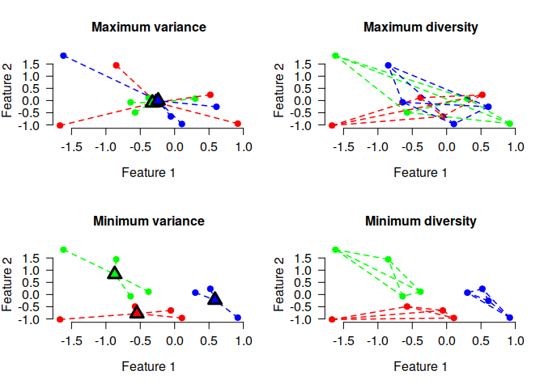

Anticlustering partitions a pool of elements into subsets (i.e., anticlusters) in such a way that the subsets are as similar as possible. This is accomplished by maximizing instead of minimizing a clustering objective function, such as the intra-cluster variance (used in k-means clustering) or the sum of pairwise distances within clusters. Thus, anticlustering creates similar sets of elements by maximizing heterogeneity within anticlusters. The package anticlust implements anticlustering algorithms as described in Papenberg and Klau (2020; https://doi.org/10.1037/met0000301). It was originally developed to assign items to experimental conditions in experimental psychology, but it can be applied whenever a user requires that a given set of elements has to be partitioned into similar subsets, or when the within-group heterogeneity should be high.
Installation
The stable release of anticlust is available from CRAN and can be installed via:
A (potentially more recent) version of anticlust can also be installed directly via Github:
If you like, you can also install the current (unstable) development version:
library("remotes") # if not available: install.packages("remotes")
install_github("m-Py/anticlust", ref = "devel")Here you may find some hints on the most recent additions to the development version.
Citation
If you use anticlust in your research, it would be courteous if you cite the following reference:
Papenberg, M., & Klau, G. W. (2020). Using anticlustering to partition data sets into equivalent parts. Psychological Methods. Advance Online Publication. https://doi.org/10.1037/met0000301.
How do I learn about anticlust
This README contains some basic information on the R package anticlust. More information is available via the following sources:
A paper is available describing the theoretical background of anticlustering and the
anticlustpackage in detail (https://doi.org/10.1037/met0000301). The freely available preprint can be retrieved from https://psyarxiv.com/3razc/.The package website contains all relevant documentation. This includes a vignette detailing how to use the anticlust package for stimulus selection in experiments and documentation for the main
anticlustfunctionsanticlustering(),balanced_clustering()andmatching().
A quick start
In this initial example, I use the main function anticlustering() to create three similar sets of plants using the classical iris data set:
# load the package via
library("anticlust")
anticlusters <- anticlustering(
iris[, -5],
K = 3,
objective = "variance",
method = "exchange"
)
## The output is a vector that assigns a group (i.e, a number
## between 1 and K) to each input element:
anticlusters
#> [1] 1 1 2 3 2 2 1 3 1 3 1 2 3 2 1 3 1 3 3 1 2 3 1 3 3 2 2 2 2 2 3 2 3 2 1 3 2
#> [38] 2 1 2 1 3 2 1 1 1 3 1 3 3 3 1 1 2 3 3 1 3 1 2 3 3 1 2 2 1 1 2 2 3 1 1 3 3
#> [75] 2 1 3 3 1 3 1 2 1 2 1 2 3 1 1 3 2 1 2 1 1 2 1 2 3 3 3 2 2 3 3 2 1 1 2 1 3
#> [112] 2 2 3 2 2 1 3 1 1 1 2 1 3 2 3 1 3 3 2 1 2 3 2 3 3 1 2 2 1 2 2 1 3 3 3 2 2
#> [149] 1 3
## Each group has the same number of items:
table(anticlusters)
#> anticlusters
#> 1 2 3
#> 50 50 50
## Compare the feature means by anticluster:
by(iris[, -5], anticlusters, function(x) round(colMeans(x), 2))
#> anticlusters: 1
#> Sepal.Length Sepal.Width Petal.Length Petal.Width
#> 5.84 3.06 3.76 1.20
#> ------------------------------------------------------------
#> anticlusters: 2
#> Sepal.Length Sepal.Width Petal.Length Petal.Width
#> 5.84 3.06 3.76 1.20
#> ------------------------------------------------------------
#> anticlusters: 3
#> Sepal.Length Sepal.Width Petal.Length Petal.Width
#> 5.84 3.06 3.76 1.20As illustrated in the example, we can use the function anticlustering() to create similar sets of elements. In this case “similar” primarily means that the mean values of the variables are pretty much the same across three groups. The function anticlustering() takes as input a data table describing the elements that should be assigned to sets. In the data table, each row represents an element, for example a person, word or a photo. Each column is a numeric variable describing one of the elements’ features. The table may be an R matrix or data.frame; a single feature can also be passed as a vector. The number of groups is specified through the argument K. (Alternatively, it is also possible to pass a dissimilarity matrix describing the pairwise distance between elements.)
To quantify set similarity, anticlust may employ one of two measures that have been developed in the context of cluster analysis:
- the k-means “variance” objective
- the cluster editing “diversity” objective
The k-means objective is given by the sum of the squared distances between cluster centers and individual data points. The cluster editing objective is the sum of pairwise distances within each anticluster. The following plot illustrates both objectives for 12 elements that have been assigned to three sets. Each element is described by two numeric features, displayed as the x and y axis:

The lines connecting the dots illustrate the values that enter the objective functions. For (anti)cluster editing (“diversity objective”, plots on the right side), lines are drawn between pairs of elements within the same cluster, because the objective is the sum of the pairwise distances between elements that are part of the same cluster. For k-means (anticlustering) (“variance objective”, plots on the left side ), lines are drawn connecting eech element and the centroid of the cluster to which the element is assigned, because the objective is the sum of the squared distances between cluster centers and elements.
Minimizing either the diversity or the variance objective creates three distinct clusters of elements (as shown in the lower plots), whereas maximization leads to a strong overlap of the three sets, i.e., three anticlusters (as shown in the upper plots).
To vary the objective function in the anticlust package, we can change the parameter objective. To use anticluster editing, use objective = "diversity" (this is also the default). To maximize the k-means variance objective, set objective = "variance".
Categorical constraints
Sometimes, it is required that sets are not only similar with regard to some numeric variables, but we also want to ensure that each set contains an equal number of elements of a certain category. Coming back to the initial iris data set, we may want to require that each set has a balanced number of plants of the three iris species. To this end, we can use the argument categories as follows:
anticlusters <- anticlustering(
iris[, -5],
K = 3,
objective = "variance",
method = "exchange",
categories = iris[, 5]
)
## The species are as balanced as possible across anticlusters:
table(anticlusters, iris[, 5])
#>
#> anticlusters setosa versicolor virginica
#> 1 17 17 16
#> 2 17 16 17
#> 3 16 17 17Matching and clustering
Anticlustering in a sense creates sets of dissimilar elements; the heterogenity within anticlusters is maximized (either using the cluster editing or k-means objective as measure of heterogenity). The anticlust package also provides functions for “classical” clustering applications: balanced_clustering() creates sets of elements that are similar while ensuring that clusters are of equal size. This is an example:
# Generate random data, cluster the data set and visualize results
N <- 1000
lds <- data.frame(var1 = rnorm(N), var2 = rnorm(N))
cl <- balanced_clustering(lds, K = 10)
plot_clusters(lds, clusters = cl, show_axes = TRUE)
The function matching() is very similar, but is usually used to find small groups of similar elements, e.g., triplets as in this example:
# Generate random data and find triplets of similar elements:
N <- 120
lds <- data.frame(var1 = rnorm(N), var2 = rnorm(N))
triplets <- matching(lds, p = 3)
plot_clusters(
lds,
clusters = triplets,
within_connection = TRUE,
show_axes = TRUE
)
Questions and suggestions
If you have any question on the anticlust package or any suggestions (which are greatly appreciated), I encourage you to contact me via email (martin.papenberg@hhu.de) or Twitter, or to open an issue on the Github repository.